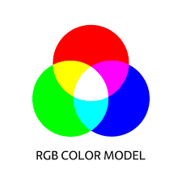
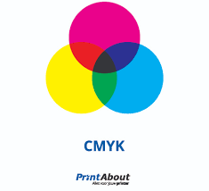

Kleurmodellen zijn systemen die worden gebruikt om kleuren op een gestructureerde en reproduceerbare manier te definiëren. Er zijn verschillende kleurmodellen maar dit zijn de twee meest gebruikte: het RGB-model en het CMY(K)-model.
RGB (Rood, Groen, Blauw): 
Dit model is gebaseerd op het feit dat het menselijk oog gevoelig is voor drie hoofdkleuren: rood, groen en blauw.
Door verschillende hoeveelheden van deze kleuren te combineren, kunnen we een breed scala aan kleuren produceren.
Kleurcreatie: Wanneer alle drie de kleuren op hun maximale intensiteit staan, krijg je wit. Wanneer ze allemaal afwezig zijn, krijg je zwart.
CMY(K) (Cyaan, Magenta, Geel, Zwart): 
Dit model is gebaseerd op subtractieve kleurmenging. In tegenstelling tot RGB, waar kleuren worden toegevoegd, worden bij CMY(K) kleuren juist weggenomen (subtractie). Dit model wordt vaak gebruikt in drukwerk.
Kleurcreatie: Cyaan, magenta en geel zijn de hoofdkleuren, en ze worden gemengd om andere kleuren te produceren. Zwart wordt toegevoegd om de intensiteit te verhogen en echte zwarte tinten te verkrijgen.